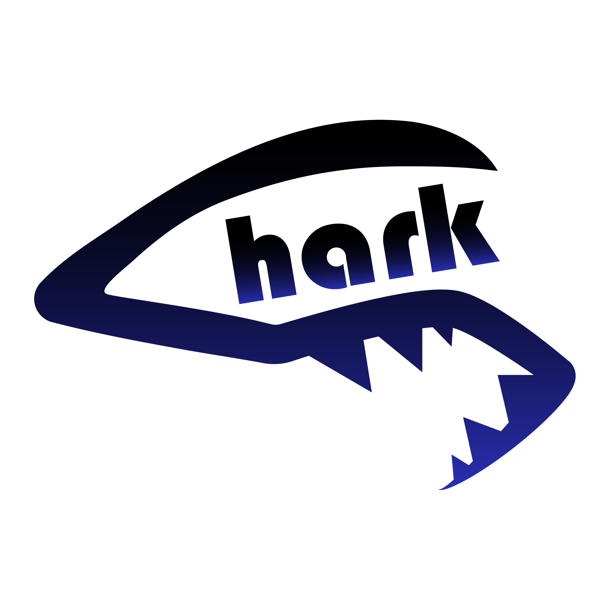
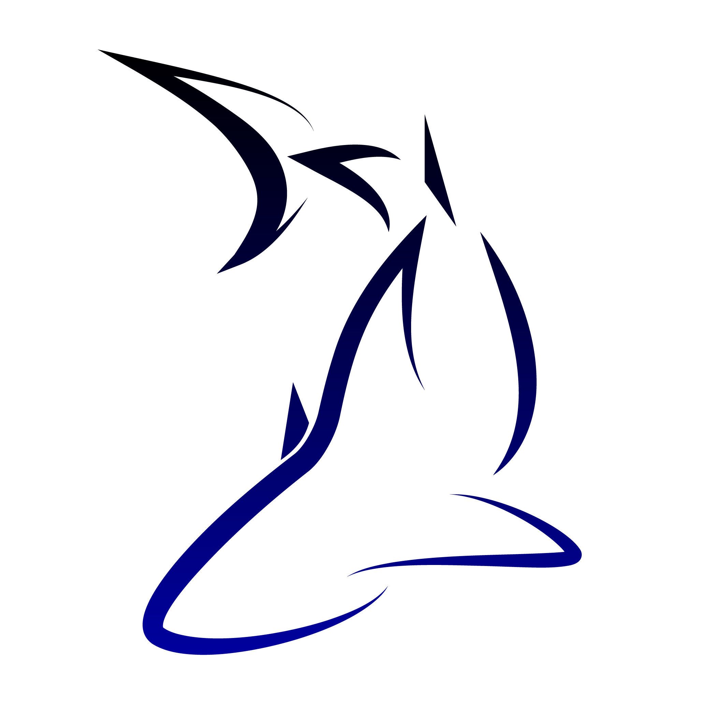
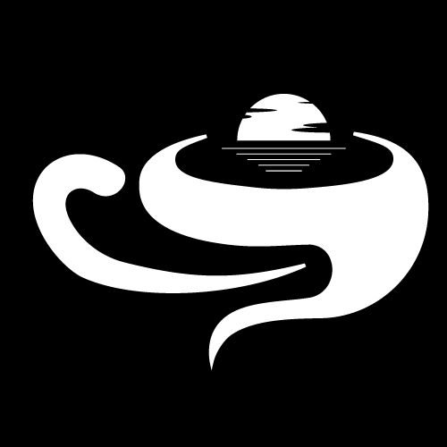
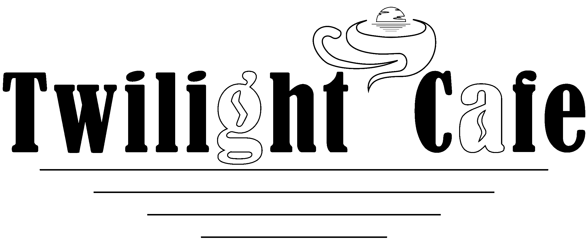
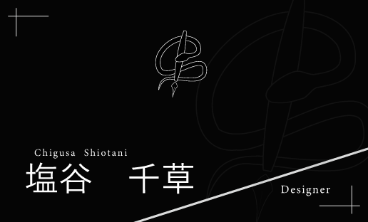
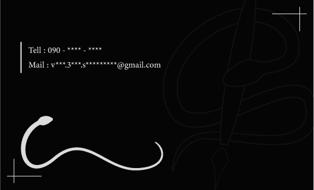

Logoロゴデザイン


概要
経験積むために無償でのロゴ製作を募集したところ、 友人が依頼してくれたので作成しました。 ポートフォリオ掲載の許可を頂いたのでここに載せます。友人の希望を叶えた物を複数用意し、選んでもらった二つの案をロゴにしました。
コンセプト
サメモチーフ。シンプルながらにかっこいい感じ。
黒から青へのグラデーション。
ポイント
一つ目:「Shark」のSをサメの頭部に見立て、aの部分の穴をサメの目に見立てたデザイン。
反省点
曲線が歪。文字の角度とその下の線の角度があっておらず統一感がない。


概要
架空のカフェサイトを練習で作ろうと思っていたので、そのためのカフェのロゴを作成しました。
黄昏(Twilight)＋カフェのコンセプトに沿うようデザインしました。
コンセプト
黄昏とコーヒー。
ポイント
コーヒーカップ部分を水面に見立て、そこに太陽が沈んでいくようなデザインにしました。
カップそのものも曲線と入り抜きを意識し、コーヒーの湯気を意識したデザインにしました。
また、”g”と”a”の穴部分をコーヒー豆に見立て、カフェのイメージを強めました。
反省点
全体のイメージに対してカップのデザインの重心が下寄り。曲線が歪。
Business card名刺デザイン


概要
自身の名刺を作っておきたくて作成しました。蛇が好きなのでモチーフとして蛇のデザインを取り入れました。
また、線の美しさをメインとしたデザインとしたいため、黒地に白いオブジェクトを入れ、シンプル且つバランスの良さを意識しました。また、Illustlatorの機能で、オブジェクトをブラシとして登録、使用する機能を使って蛇のオブジェクトをブラシ化し、よりデザインを効率的にしました。
コンセプト
シンプルで美しい線。蛇モチーフ。
（ロゴ）蛇×ペン（デザイン）。Snakeの頭文字であり自身のイニシャルである”S”を意識したデザイン。
ポイント
ロゴを中心に配置し下部に名前等を配置。左に重心が偏ってしまうため、名前と「Designer」の間に斜線を入れることでコンセプトを損なわずにバランスを調整。
枠線を裏表で反転させることでより一体感を意識。「線」を意識。
反省点
ロゴを透かして入れていても裏デザインのバランスが左に傾きすぎているように思える。斜線の角度ももう少し見直した方がいいように感じた。
また、ロゴを透かしすぎてしまって、見えにくくなってることでよりバランスが崩れて見える。